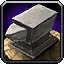
This Classic WoW Blacksmithing Leveling Guide will show you the fastest and easiest way to level your Blacksmithing skill up from 1 to 300.Blacksmithing uses a lot of ores, so I recommend leveling this profession together with Mining because you will need a lot of gold if you want to buy everything from the Auction House. Check out my Classic Mining leveling guide 1-300 if you want to level Mining.
I recommend trying Zygor's 1-60 Leveling Guide if you are still leveling your character or just starting a new alt. It will help you to reach level 60 a lot faster.
Shopping List
Below is the full list of materials needed to level Blacksmithing in WoW Classic.
- 150x
 Rough Stone
Rough Stone - 150x
 Copper Bar
Copper Bar - 95x
 Coarse Stone
Coarse Stone - 5x
 Silver Bar
Silver Bar - 140x
 Bronze Bar
Bronze Bar - 105x
 Heavy Stone
Heavy Stone - 5x
 Gold Bar
Gold Bar - 230x
 Iron Bar
Iron Bar - 35x Green Dye - Sold by Tailoring and Leatherworking supply vendors
- 190x
 Steel Bar - Made from 190 Iron Bar + 190 Coal if you have Mining. The Blacksmithing Supply vendor sells the Coal.
Steel Bar - Made from 190 Iron Bar + 190 Coal if you have Mining. The Blacksmithing Supply vendor sells the Coal. - 480x
 Solid Stone - If you can't get the
Solid Stone - If you can't get the  Plans: Mithril Spurs from the Auction House, you will only need 120 Solid Stone, but depending on which recipes you can get, you will need more Mithril, Thorium, or Leathers. You can check the 260-270 part for more details.
Plans: Mithril Spurs from the Auction House, you will only need 120 Solid Stone, but depending on which recipes you can get, you will need more Mithril, Thorium, or Leathers. You can check the 260-270 part for more details. - 60x
 Mageweave Cloth (you will need another 90x if you can't get the Mithril Spurs recipe)
Mageweave Cloth (you will need another 90x if you can't get the Mithril Spurs recipe) - 220x
 Mithril Bar
Mithril Bar - 20x
 Dense Stone
Dense Stone - 730x
 Thorium Bar
Thorium Bar - 30x
 Star Ruby
Star Ruby - 5x
 Aquamarine
Aquamarine
If you have Mining and want to farm the ores, please see my farming guides:
 Copper Ore farming
Copper Ore farming  Tin Ore farming
Tin Ore farming  Iron Ore farming
Iron Ore farming  Mithril Ore farming
Mithril Ore farming  Thorium Ore farming
Thorium Ore farming
Classic Blacksmithing Trainers
You can learn Classic Blacksmithing from any of these NPCs below, but you have to reach level 5 before you can learn it.
Just click on any of these links below to see the trainer's exact location. You can also walk up to a guard in any city and ask where the Blacksmithing trainer is, then it will be marked with a red flag on your map.
Horde trainers:
 Ug'thok in Orgrimmar.
Ug'thok in Orgrimmar.- Basil Frye in Undercity.
- Thrag Stonehoof in Thunder Bluff
- Dwukk in Durotar.
Alliance trainers:
 Groum Stonebeard in Ironforge.
Groum Stonebeard in Ironforge.- Dane Lindgren in Stormwind City.
- Delfrum Flintbeard in Darkshore
- Smith Argus in Elwyn Forest.
- Tognus Flintfire in Dun Morogh.
Leveling Classic Blacksmithing
1 - 75
- 1 - 30
40x Rough Sharpening Stone - 40 Rough Stone
- 30 - 65
55x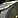
Rough Grinding Stone - 110 Rough StoneSave 10 Rough Grinding Stones.
- 65 - 75
25x Coarse Sharpening Stone - 25 Coarse Stone
Blacksmithing Journeyman
You can only train Blacksmithing past 75 if you learn Journeyman Blacksmithing. Not every Blacksmithing trainer will teach you this skill, you have to find an Expert Blacksmith. (Requires level 10)
You can learn Journeyman Blacksmithing from these NPCs below:
Horde trainers:
- Snarl in Orgrimmar.
- James Van Brunt in Undercity.
- Karn Stonehoof in Thunder Bluff
Alliance trainers:
- Rotgath Stonebeard in Ironforge.
- Therum Deepforge in Stormwind City.
75 - 125
- 75 - 90
35x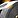
Coarse Grinding Stone - 70 Coarse StoneSave the Coarse Grinding Stones.
If you didn't reach 90 by making these, you can still continue to the next step, but you will need a few more Copper Bars, or make a few more Coarse Grinding Stones.
- 90 - 100
10x Runed Copper Belt - 100 Copper Bar
Runed Copper Belt - 100 Copper Bar
- 100 - 105
5x Silver Rod - 5 Silver Bar, 10 Rough Grinding Stone
Silver Rod - 5 Silver Bar, 10 Rough Grinding Stone
You can also skip this part and just make Runed Copper Belt if you don't have any Silver Bar.
- 105 - 110
5xRuned Copper Belt - 50 Copper Bar
- 110 - 125
15x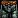
Rough Bronze Leggings - 90 Bronze Bar
Blacksmithing Expert
You can only train Blacksmithing past 150 if you learn Expert Blacksmithing. Not every Blacksmithing trainer will teach you this skill, you have to find an Artisan Blacksmith. (Requires level 20)
Horde players can learn Expert Blacksmithing from  Saru Steelfury in Orgrimmar and Alliance players can learn it from
Saru Steelfury in Orgrimmar and Alliance players can learn it from  Bengus Deepforge in Ironforge.
Bengus Deepforge in Ironforge.
125 - 225
- 125 - 140
35x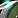
Heavy Grinding Stone - 105 Heavy StoneKeep the Heavy Grinding Stones. Make this one up to 150, if Heavy Stone is cheap.
- 140 - 150
10x Patterned Bronze Bracers - 50 Bronze Bar, 20 Coarse Grinding Stone
Patterned Bronze Bracers - 50 Bronze Bar, 20 Coarse Grinding Stone
- 150 - 155
5x Golden Rod - 5 Gold Bar, 10 Coarse Grinding Stone
Golden Rod - 5 Gold Bar, 10 Coarse Grinding Stone
Green Dye is sold by Tailoring and Leatherworking supply vendors.
- 155 - 165
10x Green Iron Leggings - 80 Iron Bar, 10 Heavy Grinding Stone, 10 Green Dye
- 165 - 190
25x Green Iron Bracers - 150 Iron Bar, 25 Green Dye
- 190 - 200
10x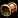
Golden Scale Bracers - 50 Steel Bar, 20 Heavy Grinding StoneAlliance players should keep 6 of these. You might need them if you choose Armorsmithing.
- 200 - 210
30x Solid Grinding Stone - 120 Solid StoneKeep at least 10 of these for the 225-235 part.
Keep all of them if you bought the
Plans: Mithril Spurs, and you will also have to make another 100. (you can make them later too)
- 210 - 225
15x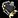
Heavy Mithril Gauntlet - 90 Mithril Bar, 60 Mageweave Cloth
Blacksmithing Specializations
At Blacksmithing skill 200 and character level 40, you can specialize in Armorsmithing or Weaponsmithing to craft powerful weapons or armors. (Choosing one is optional, you don't need it to level Blacksmithing. You can choose later too)
For information on how to become an Armorsmith or a Weaponsmith, please see my separate guides:
Armorsmith Quest Weaponsmith Quest
If you are not sure which one to choose yet, you can check out the list I put together to see what each specialization can craft:
List of Weaponsmith and Armorsmith recipes
Blacksmithing Artisan
You can only train Blacksmithing past 225 if you learn Artisan Blacksmithing. Not every Blacksmithing trainer will teach you this skill, you have to find a Master Blacksmith. (Requires level 35)
You can learn Artisan Blacksmithing from Brikk Keencraft in Booty Bay in Stranglethorn Vale.
225 - 235
10x 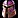
Horde players should keep 4 of these. You might need them if you choose Armorsmithing.
235 - 250
Buy  Plans: Mithril Spurs from the Auction House.
Plans: Mithril Spurs from the Auction House.
15x Mithril Spurs - 60x Mithril Bar, 45x Solid Grinding Stone
Alternative recipe
15x Mithril Coif - 150 Mithril Bar, 90 Mageweave Cloth
250 - 260
20x 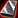
260 - 270
20x Mithril Spurs - 80 Mithril Bar, 60 Solid Grinding Stone
Alternative recipes
If you couldn't get the  Plans: Mithril Spurs recipe, then you can try to buy one of these:
Plans: Mithril Spurs recipe, then you can try to buy one of these:  Plans: Thorium Bracers,
Plans: Thorium Bracers,  Plans: Thorium Belt,
Plans: Thorium Belt,  Plans: Radiant Belt.
Plans: Radiant Belt.
- 10x
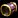
Thorium Bracers - 120 Thorium Bar, 40 Blue Power Crystal - 10x Thorium Belt - 120 Thorium Bar, 40 Red Power Crystal
- 10x Radiant Belt - 100 Thorium Bar, 20 Heart of Fire
Recipes from the trainer
You can make these if you cannot get any of the recipes above.
- 260-265
8x Heavy Mithril Boots - 112 Mithril Bar, 32 Thick Leather
- 265-270
5x Imperial Plate Belt - 110 Thorium Bar, 30 Rugged Leather, 5 AquamarineYou can get the recipe from the
 Imperial Plate Belt (req lvl 50.) quest in Tanaris from Derotain Mudsipper. You will need 20x Thorium Bar to complete the quest.
Imperial Plate Belt (req lvl 50.) quest in Tanaris from Derotain Mudsipper. You will need 20x Thorium Bar to complete the quest.The next two recipes are also from the same NPC, so make sure to bring at least 190x
Thorium Bar with you to craft 5x Imperial Plate Belt and buy all 3 recipes!
270 - 295
25x 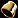
You can get the  Plans: Imperial Plate Bracers after you complete the
Plans: Imperial Plate Bracers after you complete the  Imperial Plate Bracer (req lvl 50.) quest in Tanaris for Derotain Mudsipper. The quest requires 20
Imperial Plate Bracer (req lvl 50.) quest in Tanaris for Derotain Mudsipper. The quest requires 20  Thorium Bar.
Thorium Bar.
The recipe will be yellow for the last 5 points, so you might have to make a few more.
295 - 300
5x Imperial Plate Boots - 170 Thorium Bar, 5 Star Ruby, 5 Aquamarine
You can get the recipe from the same NPC as the previous one, but this quest requires 40  Thorium Bar.
Thorium Bar.
Congratulations on reaching 300! Please send feedback about the guide if you think there are parts I could improve, or you found typos, errors, wrong material numbers!